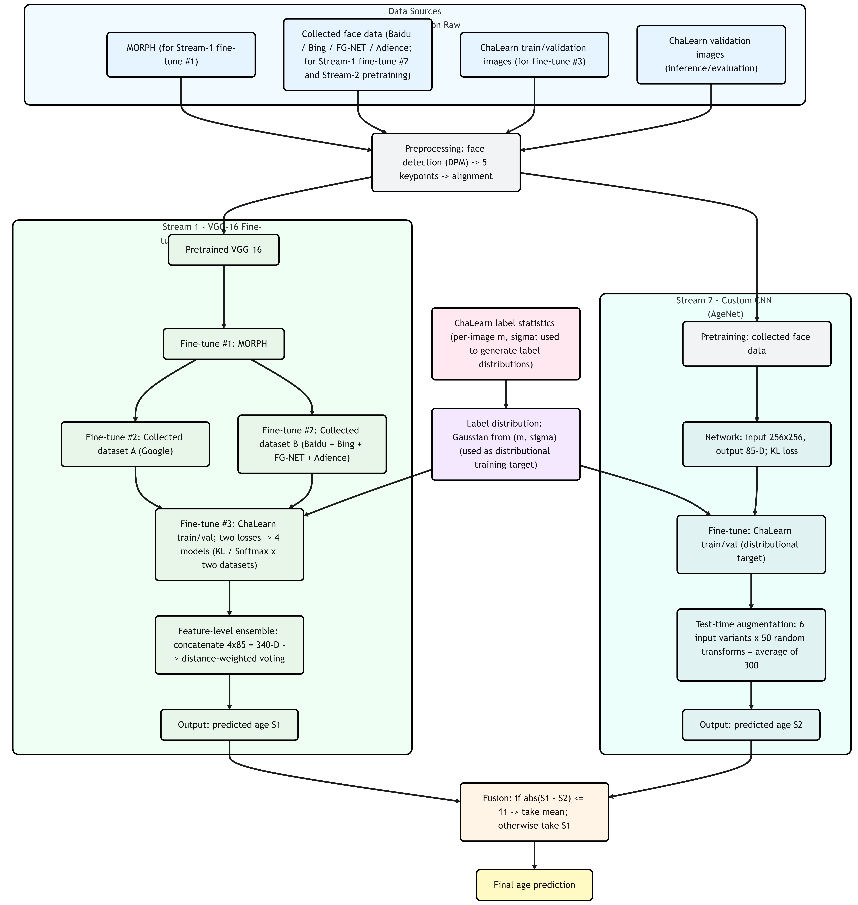

Thorough Analysis | Deep Label Distribution Learning: Distributional Supervision and Practical Construction
This post is a close reading of Xin Geng et al.’s papers “Deep Label Distribution Learning for Apparent Age Estimation” (2015) and “Practical Age Estimation Using Deep Label Distribution Learning” (2020). Starting from the ICCV Workshops 2015 solution, it walks through the ChaLearn-facing two-stream CNN, the soft labels generated from the annotated mean and variance with KL-based distribution supervision, and the full training/inference pipeline. It then moves to Practical DLDL (2020), which shrinks the “global” label distribution into a neighborhood-truncated distribution centered at the true age and systematically sweeps σ.
Paper links:
Deep Label Distribution Learning for Apparent Age Estimation
Practical Age Estimation Using Deep Label Distribution Learning
Prior article link: Thorough Analysis | From Single Labels to Label Distributions: A New Approach for Facial Age Estimation
Deep Label Distribution Learning
Distribution supervision
This section corresponds to the ICCV Workshops 2015 paper Deep Label Distribution Learning for Apparent Age Estimation, which describes the team’s solution to the ChaLearn Looking at People apparent age challenge. The dataset is not labeled with biological age as a single label. Instead, each image has an apparent age mean \(m\) and standard deviation \(\sigma\) aggregated from multiple annotators to represent uncertainty. The authors set the learning target to an age distribution and reported a test score of 0.3057. The organizers provided 3,615 images for training/validation (2,479/1,136); the held-out test set was used for evaluation only.
Before entering the model, images undergo a unified preprocessing pipeline: detect faces with DPM, then align with five landmarks (centers of the eyes, nose tip, and mouth corners) via an affine transform to produce standardized faces fed to the two network streams. This reduces pose/alignment variance and stabilizes distribution supervision.
The overall design uses two parallel deep CNN streams:
Stream 1 (VGG-16 backbone). Input: aligned \(224\times224\) faces. Architecture: five conv blocks plus two FC layers. The final layer outputs 85 logits covering ages 0–84. Training uses either KL divergence to a soft age distribution or a single-age softmax loss. The schedule first fine-tunes on MORPH, then performs two separate fine-tunings on two in-house datasets, and finally fine-tunes on the challenge’s train+val images. Because the last stage mixes distribution and classification supervision and the second stage uses two datasets, this yields four complementary models. At inference, each model’s 85-D output is concatenated into a 340-D feature. An exponential-kernel distance-weighted voting maps this feature to a single predicted age, serving as Stream-1’s output.
Stream 2 (custom CNN). Input: aligned \(256\times256\) faces. The first layer uses an \(11\times11\) convolution with batch normalization; the head also outputs 85 logits and is trained with KL loss to match the soft distribution synthesized from \((m,\sigma)\). This stream is pre-trained on collected face data and fine-tuned on the challenge’s train+val images. To improve robustness, the authors train six variants with different input representations and apply heavy test-time augmentation (50 random scales and flips per image). Averaging 300 predictions (6 reps × 50 TTA) gives Stream-2’s output.
Late fusion. Fuse the two scalar age predictions: if their absolute difference is \(\le 11\) years, take the mean; otherwise, keep Stream-1’s result as final. Test images follow the same detect–align pipeline, the two streams infer independently, and the fusion rule produces the submission. The overall flow is shown below.

Practical formulation
In conventional label distribution learning (LDL), a single-age label is expanded into a global soft distribution over the age space \(Y=\{1,2,\ldots,85\}\) (often Gaussian or triangular). A Gaussian label centered at the true age \(a\) is \[ D_a(y)=\frac{1}{Z}\exp\!\Big(-\frac{(y-a)^2}{2\sigma^2}\Big),\quad y\in Y, \] where \(Z\) is the partition function ensuring \(\sum_{y\in Y}D_a(y)=1\): \[ Z=\sum_{y\in Y}\exp\!\Big(-\frac{(y-a)^2}{2\sigma^2}\Big). \]
Since ages far from \(a\) are largely irrelevant, one can truncate the distribution to a local neighborhood, keeping only \([a-5,a+5]\) and renormalizing: \[ D_a^{\text{trunc}}(y)=\frac{1}{Z'}\exp\!\Big(-\frac{(y-a)^2}{2\sigma^2}\Big)\,\mathbf{1}\{|y-a|\le 5\},\quad y\in Y, \] with \(Z'\) enforcing \(\sum_{y\in Y}D_a^{\text{trunc}}(y)=1\): \[ Z'=\sum_{\substack{y\in Y\\ |y-a|\le 5}}\exp\!\Big(-\frac{(y-a)^2}{2\sigma^2}\Big). \] When \(a\) is near the boundary, the actual neighborhood is \([a-5,a+5]\cap Y\).
The CNN produces \(\hat D(y\mid x)\) (85-D after softmax). Training minimizes KL divergence (i.e., soft-label cross-entropy) \[ \sum_{y\in Y} D_a^{(\cdot)}(y)\log\!\frac{D_a^{(\cdot)}(y)}{\hat D(y\mid x)}, \] where \(D_a^{(\cdot)}\) can be the untruncated or truncated target distribution.
Experiments and results
ChaLearn challenge
The paper adopts ChaLearn’s apparent-age score \(\varepsilon = 1 - \exp\!\big(- (t-m)^2 / (2\sigma^2)\big)\) for evaluation, and reports both validation and test-set results. On validation, the two streams achieve 0.3534 and 0.3610 respectively; with the simple fusion rule (“use the mean if \(|S_1-S_2|\le 11\), else use \(S_1\)”), the score improves to 0.3377. On the final test set, the method reaches 0.3057, outperforming the organizer-reported human level (~0.34) and placing in the top 5 that year. Overall, distribution supervision plus two-stream modeling and light fusion yields consistent, quantifiable gains—both from single stream → fusion on validation and in absolute test performance.
Truncated distributions
For the truncated-distribution construction, experiments are run on MORPH and FG-NET with a consistent “detect → align → resize” preprocessing: DPM for face detection; five landmarks (eye centers, nose tip, mouth corners) for geometric alignment; final resolution \(224\times224\times3\). This pipeline is illustrated and discussed in the paper.
Training/evaluation uses an 80/20 random split per dataset. The metric is MAE, with definitions and implementation details provided. Optimization hyperparameters include an initial LR of 0.001, a total of 80 epochs, mini-batch size 80 for MORPH and 2 for FG-NET, and dropout 0.8. To test the effectiveness of “truncate to a neighborhood,” the Gaussian shape is kept within \([a-5,a+5]\) and \(\sigma\) is swept over \(\{0, 0.5, 1.0, \ldots, 5.0\}\). Triangular labels are discussed for conceptual comparison; main reports use Gaussians.
The \(\sigma\)–MAE curves show: MORPH is best at \(\sigma=3.0\) with MAE 2.15; FG-NET is best at \(\sigma=1.5\) with MAE 3.14. Both the curve trends and the optima indicate that “neighborhood truncation + reasonable width” improves performance.
Against prior methods, the approach achieves 2.15 / 3.14 MAE on MORPH / FG-NET, improving over DLDL’s 2.43 / 3.76. Across various \(\sigma\) settings, truncated-Gaussian distribution supervision generally outperforms DLDL and classic baselines (IIS-LLD, CPNN, ALDL, AGES, etc.). The paper also reports MORPH errors stratified by gender and race to discuss how data scale and multi-domain training may affect generalization.